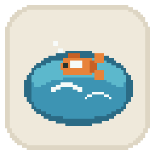
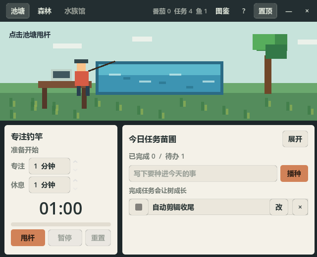
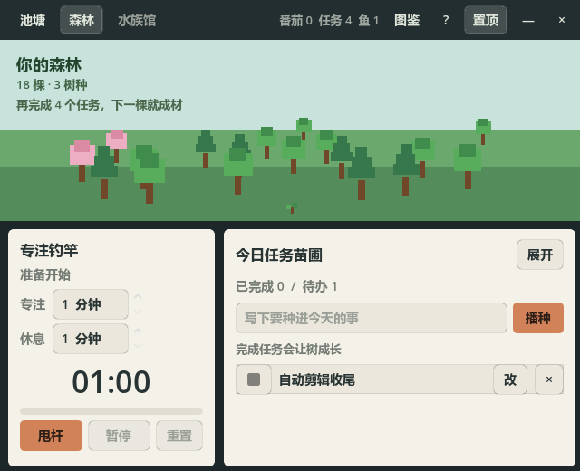
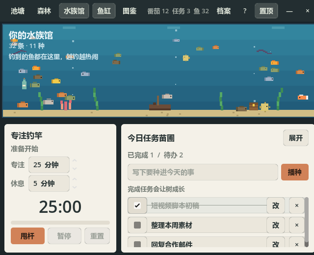

一个安静待在桌面角落的像素小窗。不抢注意力，只把你认真过的时间，慢慢攒成看得见的样子。
工位池塘是一个番茄钟，也是一只不闹腾的电子宠物。你点一下池塘开始专注，它替你甩杆钓鱼；你勾掉一项任务，森林里就多长一棵树。钓到的鱼会真的在水族馆里游，越钓越热闹。所有进度只增不减——漏了哪天，它只是安静地等你回来，不清零、不惩罚。
顶栏一键切换。池塘是"现在"，森林和水族馆是"积累"——想看看自己攒了多少，就切过去。

工作时看着它就好。点池塘或按甩杆开始专注，结束自动进入休息倒计时。

每完成一项任务，森林里就多长一棵树，树种随积累越来越多样。

钓到的鱼真的在缸里游，还有里程碑鱼、可解锁布置的珊瑚沉船宝箱。
点下面的按钮直接下载——文件就放在这个站点上，国内直连、免安装、双击即玩，不用网盘、不用转存。
↓ 下载 Windows 版 · 免安装 · 约 110MB老用户覆盖运行即可，存档不受影响。也可以去 GitHub Releases 查看历史版本与更新说明。